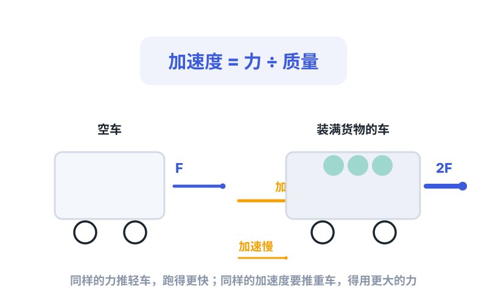
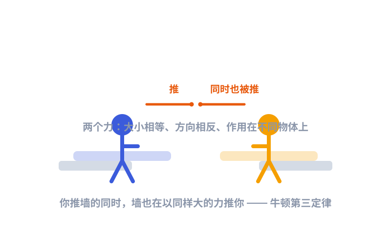

一、在牛顿之前，运动是个谜
两千多年前，亚里士多德说：物体要一直运动，就得一直有东西推它；推的力一停，它就停下来。这个说法"看起来对"——你推一下箱子，手一松，箱子确实会停。
但伽利略想通了关键的一点：箱子会停，不是因为"不推就停"，而是因为地面有摩擦力在拖它。如果在一个绝对光滑、没有摩擦的地方，一个动起来的东西，会一直匀速滑下去，永远不停。
牛顿把伽利略这个洞察，提炼成了三条放之四海皆准的定律。它们合在一起，就是经典力学的地基。
二、第一定律：惯性——运动不需要力来维持
牛顿第一定律说：除非有外力去改变它，静止的东西会一直静止，运动的东西会一直保持原来的速度和方向，匀速直线地走下去。这种"不想改变现状"的脾气，叫惯性。
公交车急刹车，你会往前冲——不是有人推你，是你的身体想保持刚才往前的速度。安全带，就是用来在关键时刻拉住这个"惯性"的。
反过来，要让一个东西加速、减速、或者转弯（改变方向也算改变运动状态），一定要有外力。这就引出了第二定律。
三、第二定律：F = m a，力的"说明书"
这是三条里最实用、也最常考的一条。它把"力、质量、运动变化"三个量绑在了一起：
这条公式读起来很直白：
- 同样的力，推空车比推满载的车加速度大——因为质量小；
- 同样的车，用的力越大，加速越猛；
- 如果合力为零（比如两股力刚好抵消），加速度就是零——物体要么静止，要么匀速直线，正好回到第一定律。

四、第三定律：作用力与反作用力

牛顿第三定律说：只要你用力推一个东西，那个东西也用同样大小的力推你回来；两个力方向相反，而且作用在不同的物体上。
常有人问：既然互相推的力一样大，游泳、走路、火箭怎么还能动？关键在于——这两个力作用在不同的东西上。你蹬地，地也推你，但你和地是分开的两物体；火箭向后喷气，气体也向前推火箭，于是火箭前进。力相等，但"被推的对象"不同。
五、三大定律 + 万有引力 = 一整套世界规则
把三大定律和万有引力定律合起来，牛顿就拥有了解释整个宏观世界的工具箱：
- 用万有引力算出天体之间有多大的力；
- 用第二定律 F=ma 算出在这个力下，天体会怎么加速、走什么轨道；
- 用第一、第三定律 处理平衡、碰撞、反作用……
于是从苹果到月球，从炮弹到彗星，全都服从同一套规则。这是人类第一次，能用同一个数学框架，把天上地下"统一"起来。
六、为什么你该认识它们？
因为这三条定律，至今仍是物理课本的第一课。当你在初中物理里背"一切物体都有惯性"、算"牵引力 2000 牛、车重 1000 千克、加速度多少"、理解"游泳靠水推人"时——你用的，正是牛顿 300 多年前写下的原话。
它们不只是一堆公式，更是一种看世界的方式：先把复杂现象拆成"受力"和"运动"，再用简单的规则拼回去。这种思维方式，比任何一条具体定律都更值钱。